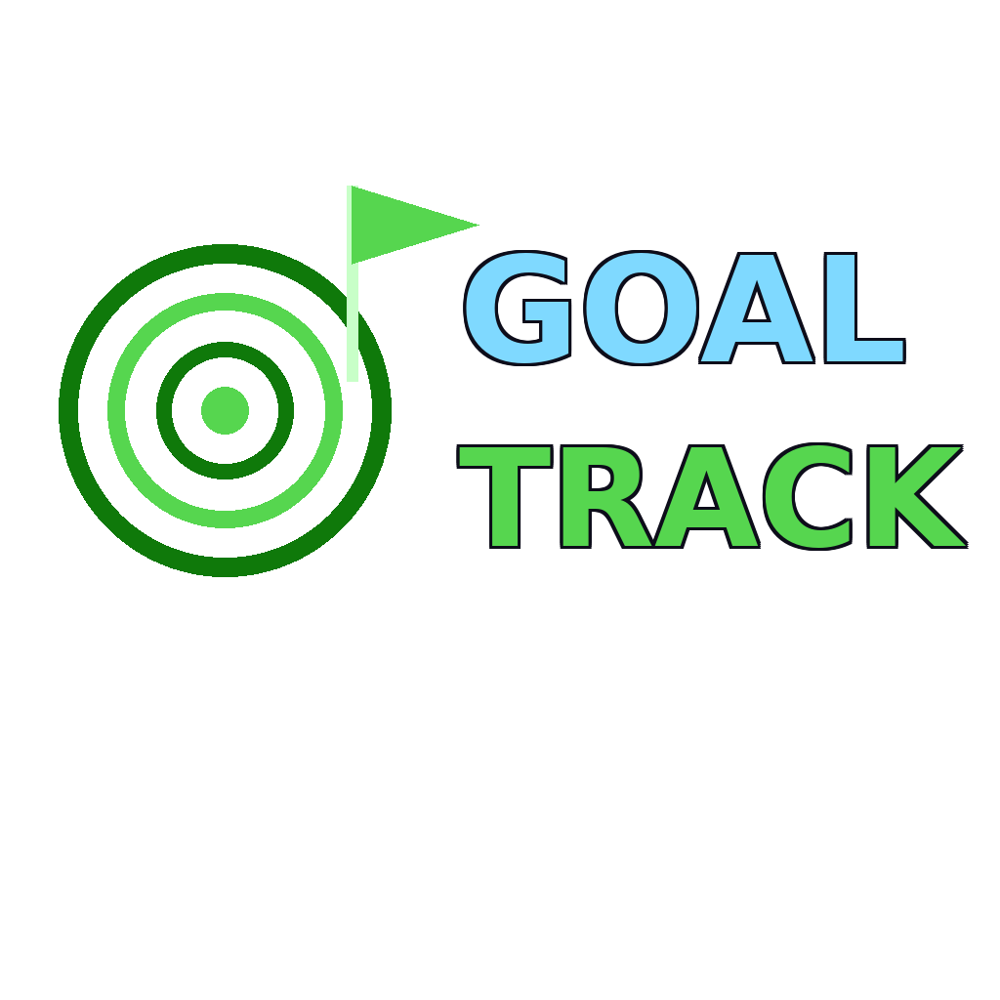

GoalTrack — Doelen tracker
GoalTrack is een eigen side-project: een lichte, client-side webapp waarmee je persoonlijke doelen aanmaakt, opdeelt in een percentage voortgang, en opvolgt tot ze afgerond zijn. Geen backend, geen account nodig — alles wordt lokaal in je browser bijgehouden via localStorage. Dit project staat volledig los van mijn schoolopdrachten: ik startte het zelf op omdat ik zelf nood had aan een simpel overzicht van mijn eigen doelen (stage zoeken, portfolio afwerken, nieuwe skills leren, ...), en omdat mijn portfolio tot nu toe alleen schoolprojecten bevatte.
Belangrijkste features
- Doelen aanmaken met titel, categorie en optionele streefdatum.
- Voortgang per doel bijhouden via een percentage-slider (0–100%).
- Automatisch als "voltooid" markeren zodra een doel 100% bereikt.
- Filteren op Alle / Actief / Voltooid.
- Alles blijft bewaard tussen bezoeken dankzij
localStorage— geen server nodig.

Live: mijn doelen
Dit is geen mockup — de tracker hieronder werkt echt. Voeg gerust een doel toe om het uit te proberen; alles wordt lokaal in jouw browser opgeslagen, dus wat je hier invult, blijft privé bij jou.
Ontwikkelproces
Waarom een side-project, en waarom dit?
Bij het herbekijken van mijn portfolio viel op dat de drie bestaande projecten (RoadMate, 3D Ramen kiosk, TO-DO website) stuk voor stuk schoolopdrachten zijn. Om mijn portfolio niet alleen schoolprojecten te laten tonen, koos ik voor iets kleins dat ik volledig zelf kon opzetten, bedenken en afwerken: een minimalistische doelen-tracker. Geen ingewikkeld idee, maar wel een volledig eigen, werkend product — van concept tot live deployment.
Front-end & opslag
GoalTrack is bewust eenvoudig gehouden: pure HTML, CSS en vanilla JavaScript, zonder framework
of build-stap, en zonder backend. Elke actie (doel toevoegen, voortgang aanpassen, verwijderen,
filteren) wordt meteen weggeschreven naar localStorage als JSON, en bij het laden
van de pagina wordt die JSON terug ingelezen om de lijst te herbouwen. Dat maakt de tool
volledig client-side en dus makkelijk te hosten als statische pagina naast de rest van mijn
portfolio op Vercel.
Uitdagingen & oplossingen
Voortgang bijhouden zonder complexiteit
Ik overwoog eerst een systeem met losse subtaken per doel (zoals een checklist), maar dat maakte de interface meteen een stuk complexer. Ik koos bewust voor een simpele percentage-voortgang per doel: minder flexibel dan losse subtaken, maar veel sneller te gebruiken en genoeg om echt bij te houden hoe ver ik sta.
State consistent houden met localStorage
Omdat er geen backend is, moest ik zelf zorgen dat de lijst van doelen in de UI altijd exact
overeenkomt met wat er in localStorage staat, ook na toevoegen, aanpassen en
verwijderen. Ik loste dat op met één centrale render()-functie die telkens de
volledige lijst opnieuw opbouwt vanuit de opgeslagen data, in plaats van de DOM stukje bij
beetje bij te werken — minder foutgevoelig, ook al is het iets minder performant dan een
volledig reactief systeem.
Context & doel
GoalTrack maakt deel uit van de "P.E.T. Projects"-challenge van het vak Create: Digital products: eigen, niet-opgelegde projecten toevoegen aan mijn portfolio om te tonen dat ik ook buiten schoolopdrachten om dingen bouw. Het doel was niet om iets ingewikkelds neer te zetten, maar om een volledig eigen idee — van bedenken tot live zetten — helemaal zelf af te werken.
Wat ik hieruit geleerd heb
Dit project leerde me vooral hoe ver je kan komen met alleen vanilla JavaScript en
localStorage, zonder meteen naar een framework of database te grijpen. Het
dwong me ook om bewust klein te blijven: in plaats van meteen features te stapelen
(accounts, subtaken, notificaties), koos ik voor de kleinste versie die al écht bruikbaar is.
Volgende stappen
Als ik hier verder aan zou bouwen, zou ik als eerste stap subtaken per doel toevoegen, gevolgd door een optie om doelen te exporteren/importeren als JSON-bestand (zodat je ze kan meenemen tussen apparaten zonder account). Op iets langere termijn zou een gedeeld account met een kleine backend (bijvoorbeeld met dezelfde PHP-aanpak als bij PlanYourTrip.be) het mogelijk maken om doelen te synchroniseren tussen toestellen.
Tools & werkwijze
Ik bouwde GoalTrack in dezelfde stijl als de rest van mijn portfolio: HTML, CSS en JavaScript, met dezelfde visuele "matrix"-huisstijl zodat het project niet als een vreemde eend in de bijt aanvoelt. Ik werkte incrementeel: eerst de basis (doel toevoegen en tonen), dan voortgang en filters, en pas op het einde de styling verfijnd zodat die aansluit bij RoadMate, de Ramen kiosk en de TO-DO website.